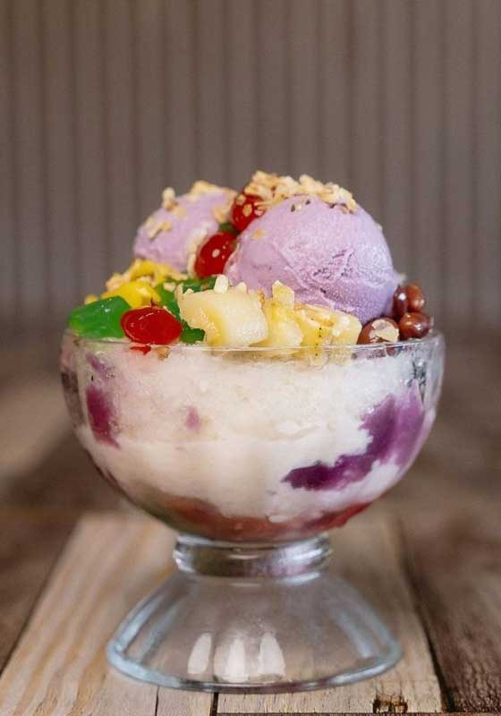
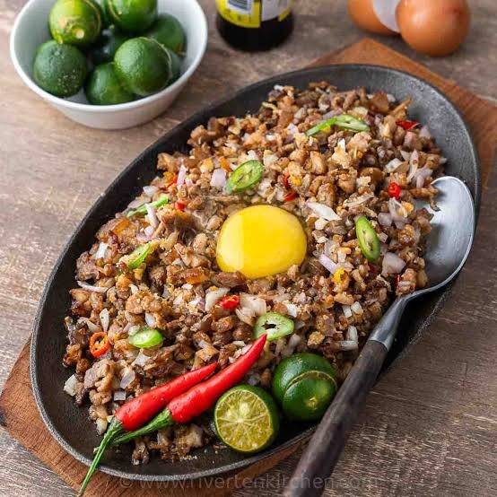

Sinigang na Baboy
Enjoy the comforting taste of traditional Filipino sour soup with tender pork and fresh vegetables.
Solid basta si Toto!
Toto is a Filipino food ordering and delivery brand. Our goal is to make delicious Filipino comfort food easy for everyone to enjoy, wherever they are.
To deliver hearty, home-style Filipino dishes quickly, conveniently, and at friendly prices.
To be the go-to name for Filipino comfort food delivery in every community.
Sarap (great taste), Malasakit (care for customers), Bayanihan (community), and Katapatan (honesty).
Enjoy the comforting taste of traditional Filipino sour soup with tender pork and fresh vegetables.

Beat the heat with this refreshing Filipino dessert filled with sweet ingredients and delicious toppings.

Enjoy flavorful, savory pork sisig served hot and topped with a perfectly cooked egg.